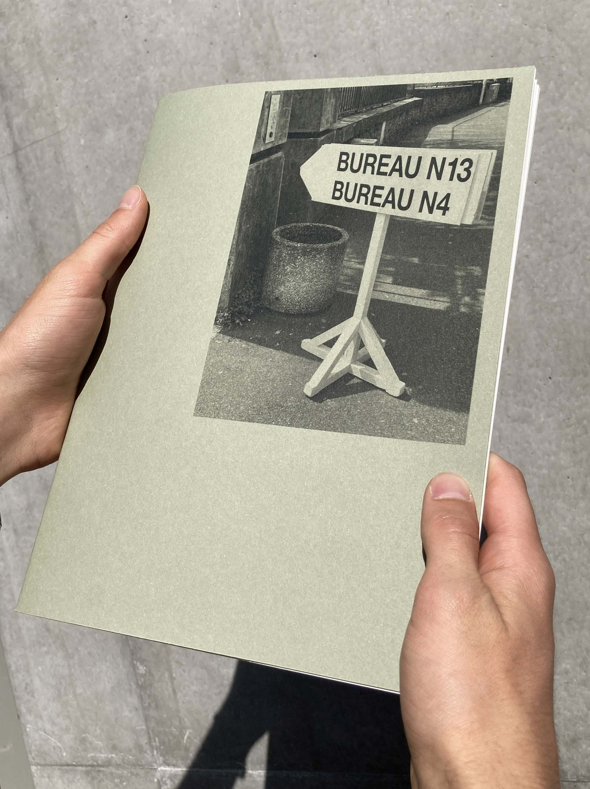
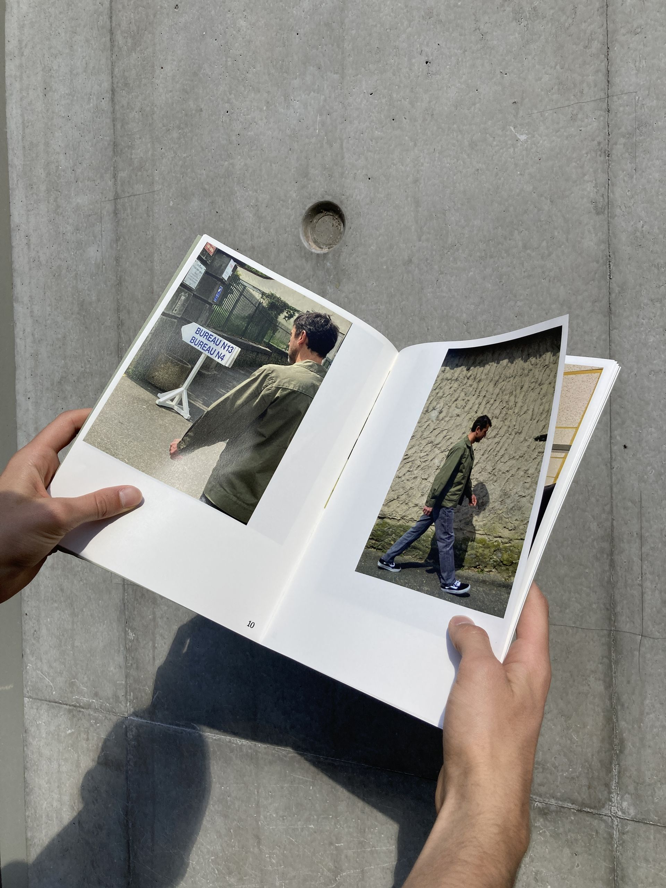
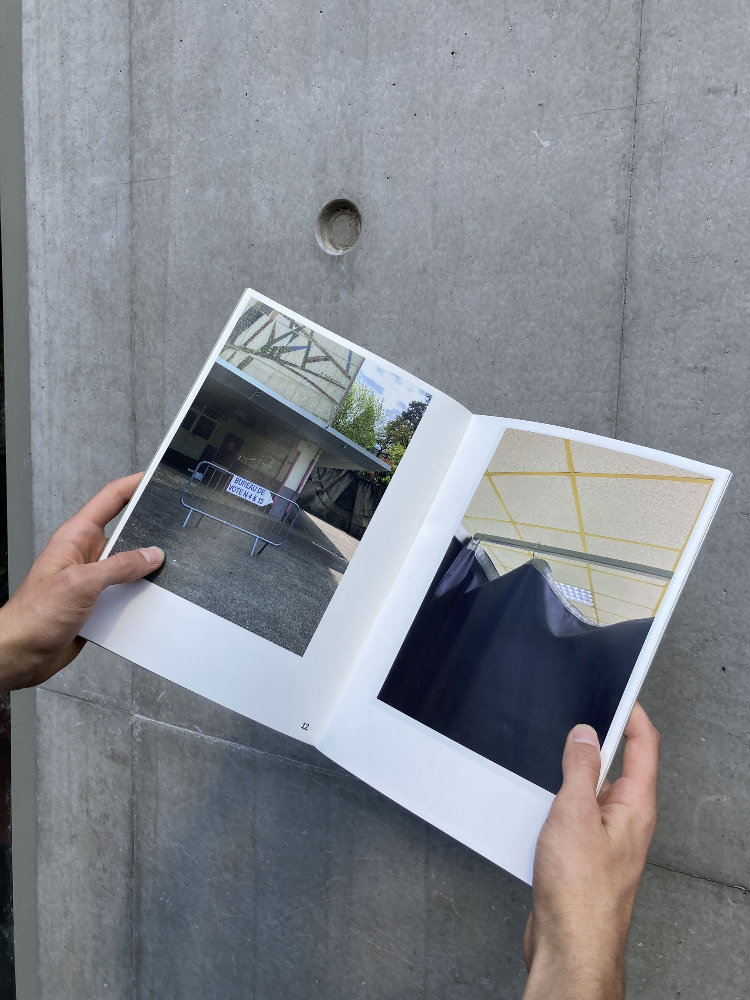
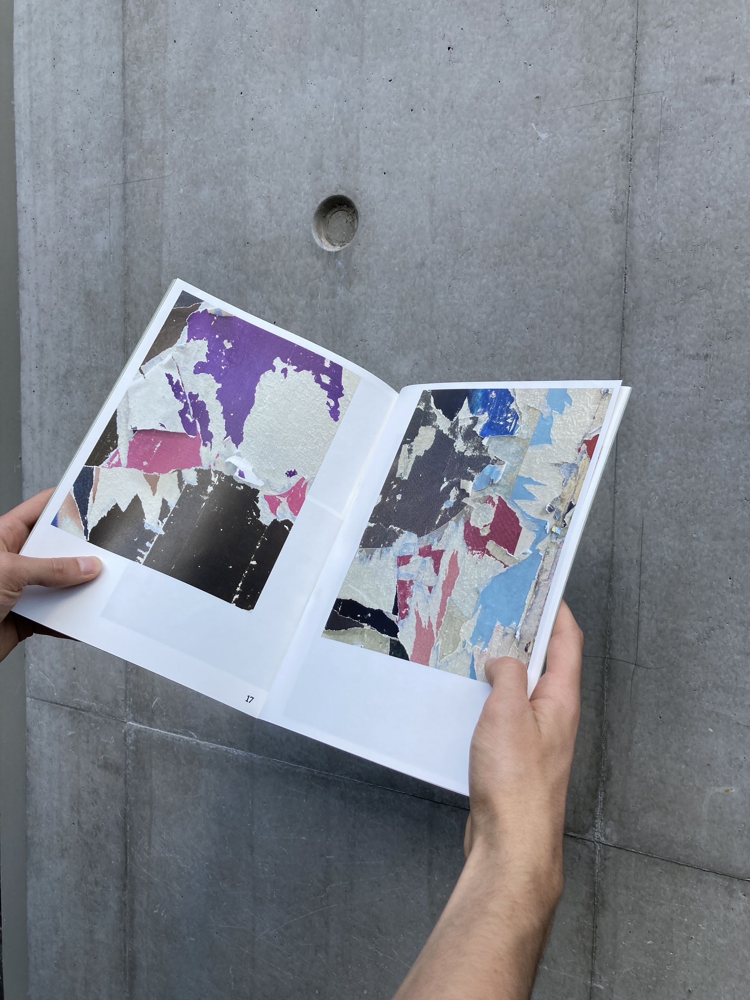
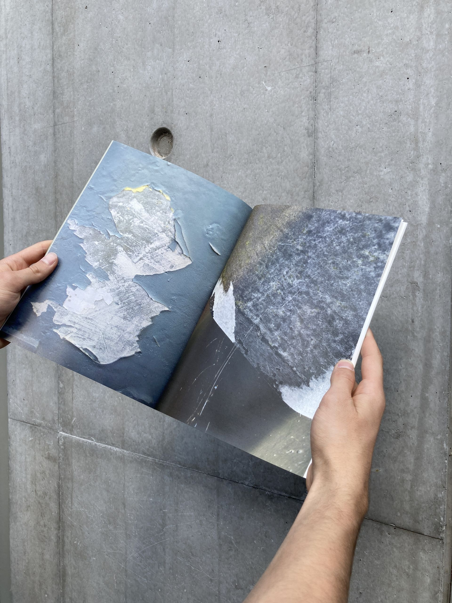
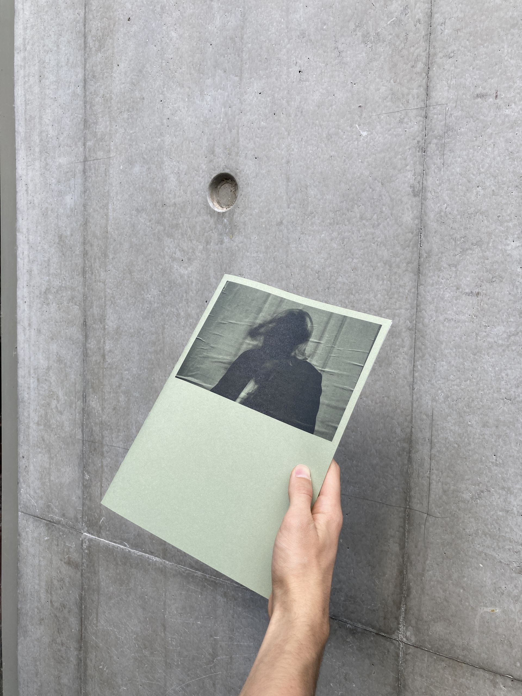

Séries photographiques, édition en deux parties. Une première, reportage, anecdotique, on suit un individu jusqu’à son vote. Paradoxe entre la banalité des photos et l’évènement, le jour de vote. Un décalage se crée. La deuxième partie est une collection graphique, deux partis pris différents, c'est une autre vision des élections, qui est plutôt plastique. L'idée de l'échelle, plus on s’approche, moins on voit au long de l'édition. Impression : laser, format ... x ... cm.
     